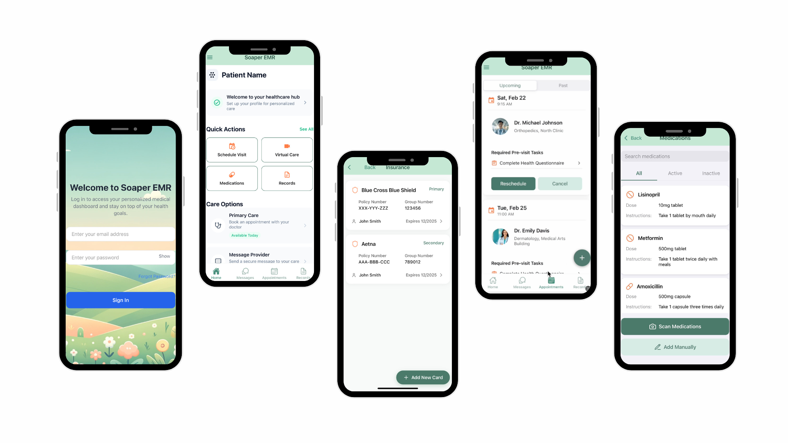
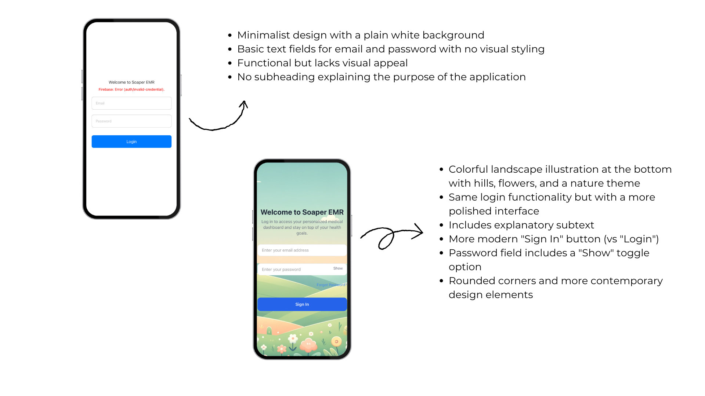
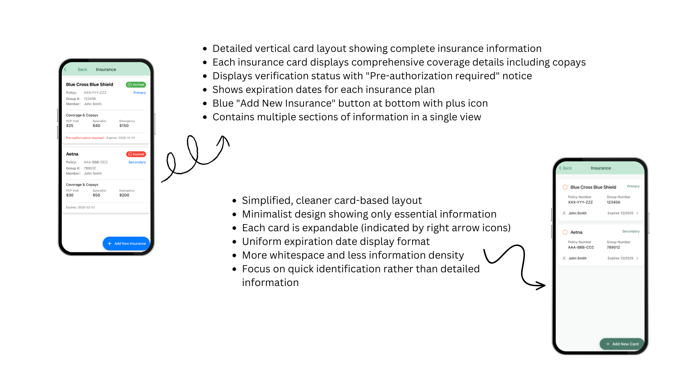
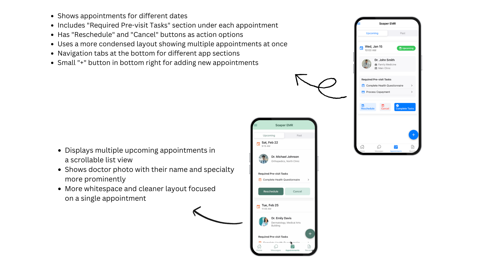
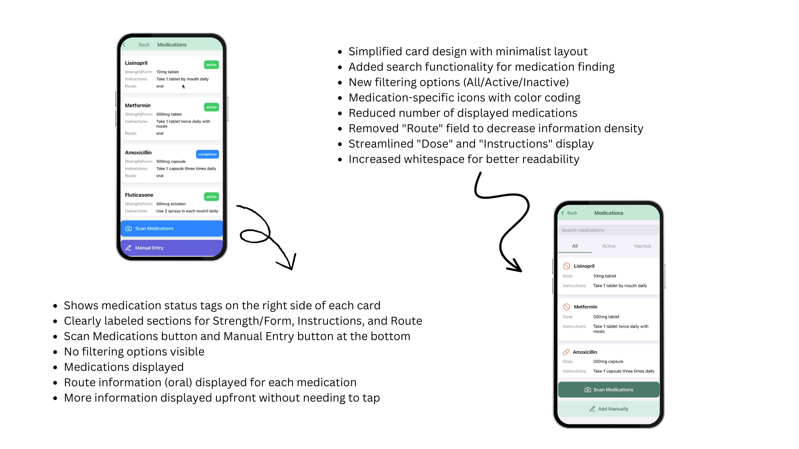

EMR Health App

OVERVIEW
I contribute to the development of mobile applications that streamline patient management while ensuring efficient compensation processes for healthcare providers.
By designing and optimizing key interfaces such as patient appointment schedulers, insurance and billing screens, medication trackers, and home dashboards, the platform facilitates accurate and timely compensation for hospitals, ensuring fair and transparent remuneration for doctors and nurses.
The goal is to create a seamless user experience that not only enhances patient care but also supports equitable financial distribution within the healthcare system.
Focus Areas
- Frontend Development: Creating interactive and responsive UI components.
- Backend & Database Management: Handling authentication and data operations using PostgreSQL.
- User research: User interviews, market research, stakeholder interviews.
Roles and responsibilities
My primary responsibility is to implement interactive and responsive UI components, ensuring smooth functionality across different devices.
Additionally, I contribute to the backend, working with PostgreSQL to manage user authentication and database operations.
Design
I was involved in designing the internal structure of the EMR Health App with a strong focus on functionality, clarity, and healthcare usability.
I worked on wireframes and translated them into responsive, user-friendly interfaces using React Native and Tailwind CSS.
I also contributed to data flow and backend logic, ensuring smooth database interaction using PostgreSQL for secure user authentication and efficient data retrieval.
The design aimed to balance clean visuals with a seamless user experience tailored for patients, providers, and administrators.
Skills & Tools
- 🎨 Tailwind CSS
- 💻 React Native
- 📝 Frondend
- 🔍 PostgreSQL
- ✏️ Database Management
- 🛠️ SQL Queries
DESIGN PROCESS
The EMR Health App was developed through an iterative and user-focused design process. We began by conducting stakeholder interviews and user surveys to identify key pain points across patients, doctors, and hospital administrators. This research helped us understand the emotional and functional challenges users face when managing healthcare data.
Based on these insights, we created user personas and journey maps to guide our ideation. Wireframes were sketched for core flows including login, appointment scheduling, medication tracking, and insurance management. These were followed by mid-fidelity mockups to explore layout and interaction patterns.
To ensure visual clarity and accessibility, we defined a design system using a soft, health-inspired color palette and structured component hierarchy. React Native and Tailwind CSS were used for rapid prototyping and implementation, allowing us to test and iterate directly within the app's architecture.
Throughout the process, we worked closely with internal stakeholders and the CEO, implementing continuous feedback loops to validate design decisions. Usability testing revealed refinements needed for filtering systems, dashboard clarity, and mobile responsiveness—all of which were incorporated into the final high-fidelity designs.
PROBLEM STATEMENT
In the healthcare industry, mobile applications play a critical role in streamlining patient management, yet many existing solutions suffer from poor user experience, slow performance, and inefficient data handling.
Patients and healthcare providers require a seamless, responsive, and secure platform for scheduling appointments, tracking medications, managing insurance and billing, and accessing personalized dashboards.
Additionally, ensuring smooth user authentication and efficient database management is crucial to maintaining data security and accessibility.
The challenge is to design a visually appealing, scalable, and high-performing mobile application that addresses these needs while providing an intuitive and effortless user experience.
"How can we design a seamless, responsive, and secure mobile application that enhances the user experience for patients and healthcare providers while efficiently managing authentication, scheduling, billing, and medication tracking?"
USER RESEARCH & SURVEY
The design of our EMR Health App was firmly rooted in comprehensive user research conducted across multiple stakeholder groups. Our survey methodology targeted patients, healthcare providers, and hospital administrators to identify critical pain points and opportunities for improvement.
For patients, we discovered significant emotional impacts related to managing their health information, with many expressing frustration about disjointed systems that failed to provide adequate support networks.
Healthcare providers highlighted challenges with scheduling and appointment management, noting how inefficient workflows reduced time available for patient care.
Hospital administrators expressed serious concerns about data security and privacy protocols in existing EMR systems, emphasizing the need for more robust protection of sensitive patient information.
The feedback loop component of our research revealed limited understanding of billing and compensation processes among all user groups, highlighting a critical area for improved transparency and communication.
These insights directly informed our design decisions, resulting in a more intuitive interface that addresses the specific needs of each user group while maintaining security and efficiency.
By centering our development process around these research findings, we created an EMR solution that not only streamlines healthcare management but also provides meaningful emotional support throughout the patient journey.
KEY CHALLENGES
Our research identified critical pain points that negatively impacted both patient experience and provider efficiency. These challenges formed the foundation of our design approach and solution strategy.
Patient Experience Issues
01
Confusing Navigation
Patients struggle to find appointment schedules and medication history due to cluttered UI, causing frustration and missed appointments.
02
Lack of Real-time Updates
No instant notifications for upcoming appointments or prescription refills, leading to treatment delays and medication gaps.
03
Complicated Billing
Patients find it difficult to understand billing breakdowns and insurance claim statuses, creating financial anxiety.
04
Limited Customization
No personalized dashboard for tracking health statistics, making it difficult for patients to monitor their progress and take ownership of their health journey.
05
Security Concerns
Fear of data breaches due to weak authentication measures, causing patients to withhold sensitive health information and limiting the effectiveness of care.
Healthcare Provider Challenges
01
Inefficient Scheduling
Difficulty managing patient appointments due to overlapping or double-booking issues, resulting in wasted clinical time and resources.
02
Performance Issues
Excessive lag in accessing patient records, leading to delays in consultations and reduced patient face time.
03
Poor EMR Integration
Lack of compatibility with existing hospital systems causes redundant data entry, increasing administrative burden and error risk.
04
Limited Mobile Support
Doctors need to rely on desktops for key functionalities, making on-the-go access difficult and reducing operational flexibility during rounds and emergencies.
05
Lack of Role-based Access
Nurses, doctors, and administrators all see the same information, causing workflow inefficiencies and overwhelming staff with irrelevant data.
VISUAL SYSTEM AND COLOUR STRATEGY
A soothing landscape that inspires well-being and mindfulness. The gentle curves of rolling hills create a sense of calm and continuity, perfect for a health-focused application.
The background features three primary colors that work in perfect harmony:
- Mint Green (#42A08A):
This calming shade evokes feelings of freshness and natural wellness, creating a foundation of tranquility throughout the interface. As it is darker in nature, it provides excellent contrast and accessibility for primary buttons, making key actions stand out with clarity and purpose.
- Soft Coral (#F8A387):
This nurturing tone creates a sense of comfort and encouragement, ideal for motivating health-conscious actions. The gentle coral hue is perfect for icons throughout the app, providing visual cues that are both intuitive and inviting, while creating moments of delight during user interaction.
- Light Sage (#B4D6A8):
This gentle hue complements the palette while providing visual breathing space across different sections of the app. Its lighter value makes it ideal for secondary buttons and supporting elements, creating hierarchy without competing with primary actions.

SCREENS REDESIGN
This login screen demonstrates the transformation of a healthcare application login screen from basic functionality to engaging user experience.
The original design features a stark white background with minimal styling, while the redesigned version incorporates a soothing nature-themed illustration, clear explanatory text, contemporary UI elements like a password toggle, and a more inviting color palette that enhances both aesthetics and usability.

Insurance screen showcases a significant design evolution in healthcare insurance information presentation, comparing a comprehensive but dense layout with a more streamlined approach.
The left design displays detailed insurance information with multiple data points visible simultaneously, while the right design adopts a minimalist card-based layout that prioritizes essential information with expandable options, creating better visual hierarchy and reduced cognitive load.

Appointment screen illustrates two approaches to appointment management in a healthcare application, highlighting improvements in information hierarchy and user workflow.
Both designs display upcoming medical appointments with pre-visit task requirements, but the right-side design creates better visual separation between appointments, prominently features provider photos and specialties, and employs additional whitespace to create a more focused, less overwhelming user experience.

Medication screen presents the evolution of medication management interfaces in a healthcare app, showing how thoughtful redesign can enhance information clarity and user efficiency.
The left design displays medication details in a traditional list format with all information readily visible, while the right design introduces filtering capabilities, search functionality, color-coded status indicators, and simplified information display that improves scannability and reduces cognitive burden.

I recently completed a significant project redesigning critical verification interfaces within a healthcare application.
My work focused on optimizing the medication verification and insurance validation screens, implementing a more intuitive user experience while maintaining strict compliance standards.
The project was built using React, allowing for component-based architecture that improved both maintainability and performance.
Working directly with the CEO, I guided multiple revision cycles to ensure the final product aligned perfectly with the company's vision and user needs.
While I cannot showcase the actual screens due to access restrictions and privacy regulations, this project demonstrated my ability to translate complex requirements into elegant, functional solutions in a highly regulated industry.